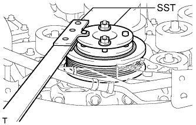
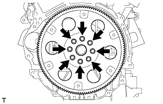

ЗАДНИЙ САЛЬНИК КОЛЕНЧАТОГО ВАЛА > СНЯТИЕ |
| 1. СНИМИТЕ АВТОМАТИЧЕСКУЮ ТРАНСМИССИЮ В СБОРЕ (для моделей с автоматической трансмиссией) |
Снимите автоматическую трансмиссию (Нажмите здесь).
| 2. СНИМИТЕ МЕХАНИЧЕСКУЮ ТРАНСМИССИЮ В СБОРЕ (для моделей с механической трансмиссией) |
Снимите механическую трансмиссию (Нажмите здесь).
| 3. СНИМИТЕ ВЕДУЩИЙ ДИСК И КОРОННУЮ ШЕСТЕРНЮ В СБОРЕ (для моделей с автоматической трансмиссией) |
|  |
Зафиксируйте коленчатый вал с помощью SST.
|  |
Выверните 8 болтов и снимите заднюю распорную втулку, ведущий диск и переднюю распорную втулку.
| 4. СНИМИТЕ КОЖУХ СЦЕПЛЕНИЯ В СБОРЕ (для моделей с механической трансмиссией) |
 |
Нанесите метки на кожух сцепления и маховик.
| *a | Метка |
Ослабьте все установочные болты, поочередно выворачивая их на один оборот, пока не ослабнет натяжение пружины.
Выверните 6 установочных болтов и снимите кожух сцепления.
| 5. СНИМИТЕ ВЕДОМЫЙ ДИСК СЦЕПЛЕНИЯ В СБОРЕ (для моделей с механической трансмиссией) |
| 6. СНИМИТЕ МАХОВИК В СБОРЕ (для моделей с механической трансмиссией) |
Зафиксируйте коленчатый вал с помощью SST.
 |
Выверните 8 болтов и снимите маховик.
| 7. СНИМИТЕ ЗАДНИЙ САЛЬНИК КОЛЕНЧАТОГО ВАЛА |
Ножом обрежьте кромку сальника.
| *1 | Место среза |
Извлеките сальник с помощью отвертки.